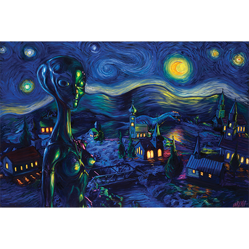

Exhibitions
Immortal Underground, Opera Gallery, New York, New York, US, November 12–December 2, 2009.
Literature
Ron English, Original Grin: The Art of Ron English (Paris: Cernunnos, 2019), p. 44. ISBN 978-2374950938.
Ron English, Status Factory: The Art of Ron English (San Francisco: Last Gasp of San Francisco, 2014), p. 64. ISBN 978-0867197891.
This work references Vincent Van Gogh’s Starry Night.
Notes